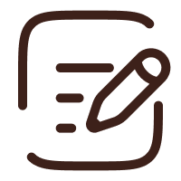
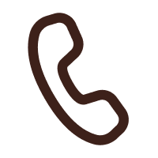
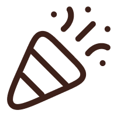
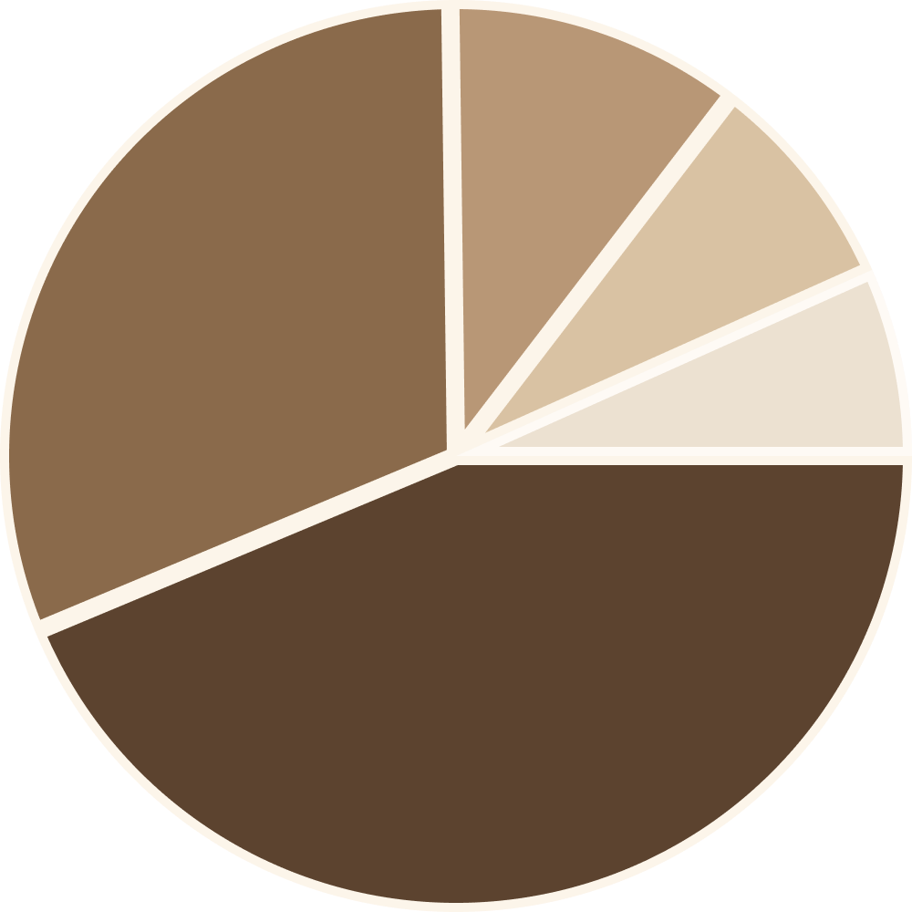

일상 속에서 자연스럽게 부수익을 만들어보세요
지역 기반 선택
예약자는 본인 집과 가까운 이웃시터를 우선적으로 확인해요.
일상 속에서 손쉽게 돌봄 요청을 받아보세요.
요청 수락형 일정
받은 예약 요청은 시터가 일정에 맞춰 직접 수락 여부를 결정할 수 있어요.
일정에 맞춰 자유롭게 요청을 수락해보세요.
부수익 창출
시팅 후, 설정한 금액의 수익이 지급됩니다.
학업이나 일을 하면서 여유 시간을 활용해부수익을 쌓아 보세요.
지역 커뮤니티 형성
지역 기반 이웃 서비스로 자연스럽게 로컬 커뮤니티가 형성돼요.
서로를 도우며, 일회성이 아닌지속적인 연결이 만들어보세요.
이웃시터는 어떻게 지원하나요?

지원서 작성
기본 정보 입력
기본 정보, 희망 활동 지역을
입력하여 지원서를 제출합니다.
프로필 등록
자기소개서 작성
시팅 성향, 반려 경험 등을
포함한 자기소개서를 작성합니다.

인터뷰 진행
온라인 인터뷰
통화 또는 메시지 인터뷰를 통해
활동 적합성을 확인합니다.

승인 & 시작
활동 시작
이웃시터 등록 안내 후,
즉시 활동을 시작할 수 있습니다.
이웃시터 신청은 간단한 서류 확인과 인터뷰만로 진행됩니다.
지원서 작성부터 승인까지 모든 절차는 온라인으로 처리되며,승인 후 바로 시터 활동을 시작할 수 있습니다.
이웃시터 등록 현황을 확인해보세요
총 5,418명의 이웃시터

- 서울 1,056명(43.7%)
- 경기 752명(31.1%)
- 부산 256명(10.6%)
- 대전 192명(7.9%)
- 기타 162명(9.7%)
전국신청
전국 어디서나 신청할 수 있습니다.
상시신청
날짜, 시간에 관계없이 언제든 신청할 수 있습니다.
무료신청
신청 비용이 발생하지 않습니다.
경험 여부 무관
펫시팅 경험이 없어도 자유롭게 신청할 수 있습니다.
우리 동네에서 활동 중인 시터를 확인하고이웃시터로 활동해보세요!